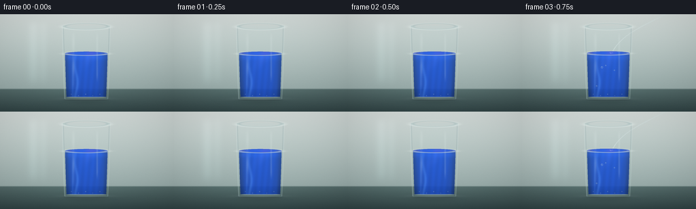
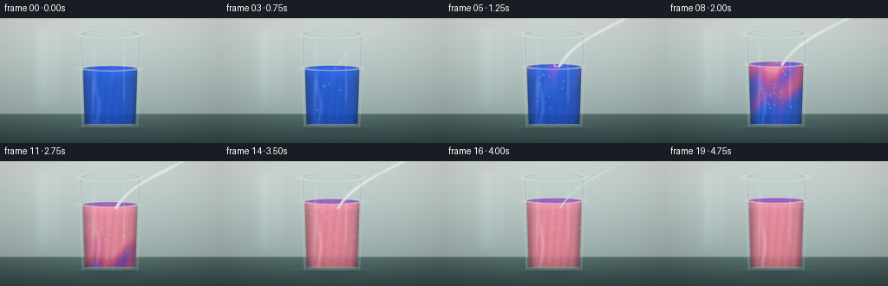
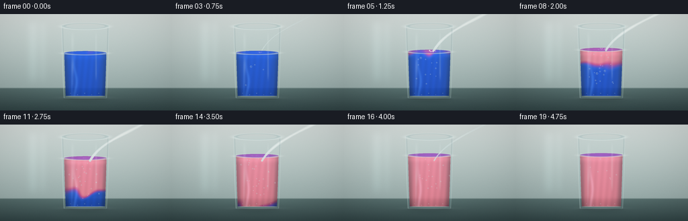

CODING AGENTS AS PIXEL WORLD MODELS
traex/DeepSeek-V4.1-Flash · phygen_148
点击播放 · 原生 RGB 像素
逐轮保存的候选
回放视频、检查图与代码变化。
每份候选均可单独播放。实际图片检查记录在下方工具轨迹中。
候选 01播放与检查图
点击播放 · 原生 RGB 像素


展开代码变化
--- 上一保存版本
+++ 本次保存版本
@@ -0,0 +1,500 @@
+"""Procedurally render a blue-litmus to red-litmus soda-water timelapse."""
+
+from __future__ import annotations
+
+import math
+from pathlib import Path
+
+import numpy as np
+from PIL import Image, ImageDraw, ImageFilter
+
+import artifact_io
+
+
+WIDTH = 256
+HEIGHT = 144
+FRAMES = 20
+FPS = 4.0
+SUPERSAMPLE = 4
+RW = WIDTH * SUPERSAMPLE
+RH = HEIGHT * SUPERSAMPLE
+
+
+def smoothstep(edge0: float, edge1: float, x):
+ t = np.clip((np.asarray(x, dtype=np.float32) - edge0) / (edge1 - edge0), 0.0, 1.0)
+ return t * t * (3.0 - 2.0 * t)
+
+
+def lerp(a, b, t):
+ return a + (b - a) * t
+
+
+def blur_mask(mask: np.ndarray, radius: float) -> np.ndarray:
+ image = Image.fromarray(np.uint8(np.clip(mask * 255.0, 0, 255)), "L")
+ image = image.filter(ImageFilter.GaussianBlur(radius * SUPERSAMPLE))
+ return np.asarray(image, dtype=np.float32) / 255.0
+
+
+def blur_rgb(image: np.ndarray, radius: float) -> np.ndarray:
+ return np.stack(
+ [blur_mask(image[..., channel], radius) for channel in range(3)], axis=-1
+ )
+
+
+def blend(image: np.ndarray, color, alpha: np.ndarray) -> np.ndarray:
+ a = np.clip(alpha, 0.0, 1.0)[..., None]
+ return image * (1.0 - a) + np.asarray(color, dtype=np.float32) * a
+
+
+def paint_rgb(image: np.ndarray, rgb: np.ndarray, alpha: np.ndarray) -> np.ndarray:
+ a = np.clip(alpha, 0.0, 1.0)[..., None]
+ return image * (1.0 - a) + rgb * a
+
+
+# Coordinates are in final 256 x 144 pixels, even though drawing is supersampled.
+y_pixels = (np.arange(RH, dtype=np.float32) + 0.5) / SUPERSAMPLE
+x_pixels = (np.arange(RW, dtype=np.float32) + 0.5) / SUPERSAMPLE
+X, Y = np.meshgrid(x_pixels, y_pixels)
+
+CENTER = 127.0
+TOP = 17.0
+BOTTOM = 126.3
+TOP_HALF = 35.0
+BOTTOM_HALF = 31.4
+
+
+def half_width(y):
+ q = np.clip((y - TOP) / (BOTTOM - TOP), 0.0, 1.0)
+ return BOTTOM_HALF + (TOP_HALF - BOTTOM_HALF) * np.power(1.0 - q, 0.72)
+
+
+def make_background() -> np.ndarray:
+ wall_q = np.clip(Y / 111.0, 0.0, 1.0)
+ top = np.array([213.0, 222.0, 219.0], dtype=np.float32)
+ lower = np.array([151.0, 170.0, 168.0], dtype=np.float32)
+ background = top[None, None, :] * (1.0 - wall_q[..., None]) + lower[None, None, :] * wall_q[..., None]
+
+ # A broad studio-light falloff and a faint vertical window reflection.
+ light = (
+ 0.105 * np.exp(-(((X - 48.0) / 74.0) ** 2 + ((Y - 23.0) / 82.0) ** 2))
+ + 0.045 * np.exp(-((X - 195.0) / 62.0) ** 2)
+ )
+ background += light[..., None] * np.array([22.0, 24.0, 23.0], dtype=np.float32)
+ window = np.exp(-((X - 49.0) / 8.0) ** 2) + 0.55 * np.exp(-((X - 64.0) / 6.0) ** 2)
+ window *= smoothstep(4.0, 21.0, Y) * (1.0 - smoothstep(88.0, 112.0, Y))
+ background += window[..., None] * np.array([8.0, 10.0, 10.0], dtype=np.float32)
+
+ # Muted slate tabletop, with a soft horizon and a little reflected light.
+ table_q = np.clip((Y - 110.0) / 34.0, 0.0, 1.0)
+ table = (
+ np.array([83.0, 105.0, 104.0], dtype=np.float32)[None, None, :] * (1.0 - table_q[..., None])
+ + np.array([48.0, 67.0, 68.0], dtype=np.float32)[None, None, :] * table_q[..., None]
+ )
+ table += (
+ 12.0 * np.exp(-((X - 118.0) / 94.0) ** 2) * (1.0 - table_q)
+ )[..., None] * np.array([0.55, 0.75, 0.72], dtype=np.float32)
+ horizon = smoothstep(109.2, 111.7, Y)
+ background = background * (1.0 - horizon[..., None]) + table * horizon[..., None]
+
+ # Fine, low-amplitude texture keeps the smooth gradients from banding.
+ rng = np.random.default_rng(148)
+ texture = rng.normal(0.0, 1.0, (RH, RW)).astype(np.float32)
+ texture = blur_mask(np.clip(0.5 + texture * 0.22, 0.0, 1.0), 0.35) - 0.5
+ background += texture[..., None] * np.array([5.0, 5.0, 4.0], dtype=np.float32)
+ return np.clip(background, 0.0, 255.0)
+
+
+BACKGROUND = make_background()
+
+
+def glass_masks(level: float):
+ q = np.clip((Y - TOP) / (BOTTOM - TOP), 0.0, 1.0)
+ half = half_width(Y)
+ inside_y = (Y >= TOP) & (Y <= BOTTOM)
+ outer_side = inside_y & (np.abs(X - CENTER) <= half)
+
+ cap_center = BOTTOM - 3.7
+ cap = (((X - CENTER) / (half_width(cap_center) - 0.3)) ** 2 + ((Y - cap_center) / 3.7) ** 2) <= 1.0
+ outer = outer_side | (cap & (Y <= BOTTOM))
+
+ inner_half = np.maximum(half - 2.55, 0.0)
+ inner_side = (
+ (Y >= TOP + 2.8)
+ & (Y <= BOTTOM - 4.1)
+ & (np.abs(X - CENTER) <= inner_half)
+ )
+ inner_cap_center = BOTTOM - 6.0
+ inner_cap = (
+ ((X - CENTER) / np.maximum(half_width(inner_cap_center) - 2.5, 1.0)) ** 2
+ + ((Y - inner_cap_center) / 2.8) ** 2
+ ) <= 1.0
+ inner = inner_side | (inner_cap & (Y <= BOTTOM - 3.8))
+
+ surface_rx = max(float(half_width(level)) - 2.65, 1.0)
+ surface_ellipse = (
+ ((X - CENTER) / surface_rx) ** 2 + ((Y - level) / 2.9) ** 2
+ ) <= 1.0
+ liquid = inner & ((Y >= level) | surface_ellipse)
+ return outer, inner, liquid, surface_rx, half
+
+
+PALETTE_STOPS = np.array([0.0, 0.24, 0.52, 0.76, 1.0], dtype=np.float32)
+PALETTE = np.array(
+ [
+ [20.0, 66.0, 188.0],
+ [32.0, 74.0, 198.0],
+ [105.0, 62.0, 176.0],
+ [192.0, 67.0, 122.0],
+ [228.0, 116.0, 132.0],
+ ],
+ dtype=np.float32,
+)
+
+
+def palette_color(mix):
+ mix = np.clip(mix, 0.0, 1.0)
+ return np.stack(
+ [
+ np.interp(mix, PALETTE_STOPS, PALETTE[:, channel]).astype(np.float32)
+ for channel in range(3)
+ ],
+ axis=-1,
+ )
+
+
+def dynamic_reflection(frame: int, chem: float, level: float) -> np.ndarray:
+ reflection = np.zeros((RH, RW, 3), dtype=np.float32)
+ liquid_color = palette_color(np.full((1, 1), 0.12 + 0.82 * chem, dtype=np.float32))[0, 0]
+ width = 24.0 + 5.0 * chem
+ body = np.exp(-((X - CENTER) / width) ** 2) * smoothstep(BOTTOM - 1.0, BOTTOM + 7.0, Y)
+ body *= 1.0 - smoothstep(BOTTOM + 10.0, BOTTOM + 26.0, Y)
+ body *= 0.19 + 0.04 * np.sin((X - CENTER) * 0.34 + frame * 0.16)
+ reflection = paint_rgb(reflection, liquid_color[None, None, :], body)
+
+ highlight = np.exp(-((X - CENTER + 12.0) / 3.2) ** 2)
+ highlight *= smoothstep(BOTTOM + 1.0, BOTTOM + 6.0, Y)
+ highlight *= 1.0 - smoothstep(BOTTOM + 12.0, BOTTOM + 24.0, Y)
+ reflection = blend(reflection, [188.0, 209.0, 204.0], highlight * 0.12)
+ return blur_rgb(reflection, 1.7)
+
+
+def liquid_field(frame: int, chem: float, level: float, pour: float):
+ rx = np.maximum(half_width(Y) - 2.55, 1.0)
+ qx = (X - CENTER) / rx
+ depth = np.clip((Y - level) / max(BOTTOM - 5.0 - level, 1.0), 0.0, 1.0)
+
+ # Acid-rich soda water arrives at the top centre, then folds down in
+ # sinuous plumes as the blue dye is converted toward litmus red.
+ plume_center = CENTER + 3.2 * np.sin(depth * 8.8 - frame * 0.46) * depth
+ plume_width = 8.0 + 7.0 * chem
+ plume = np.exp(-((X - plume_center) / plume_width) ** 2)
+ plume *= np.exp(-depth * 1.35) * (0.20 + 0.80 * pour)
+
+ wave_a = np.sin(depth * 10.5 - frame * 0.50 + qx * 2.4)
+ wave_b = np.sin(depth * 6.0 + qx * 5.8 + frame * 0.24)
+ front = (
+ 1.62 * chem
+ - 0.52 * depth
+ + 0.14 * wave_a * (0.35 + 0.65 * chem)
+ + 0.10 * wave_b
+ + 0.34 * plume * (0.45 + chem)
+ )
+ mix = smoothstep(-0.20, 0.90, front)
+
+ # A faint, stable vertical mixing boundary remains visible mid-transition.
+ veil = np.exp(-((depth - (0.58 - 0.25 * chem) + 0.045 * wave_a) / 0.16) ** 2)
+ mix = np.clip(mix + 0.10 * veil * chem * (1.0 - chem), 0.0, 1.0)
+ return mix, depth, qx
+
+
+def render_liquid(frame: int, chem: float, level: float, pour: float, base: np.ndarray):
+ outer, inner, liquid, surface_rx, half = glass_masks(level)
+ mix, depth, qx = liquid_field(frame, chem, level, pour)
+ color = palette_color(mix)
+
+ cyl = np.sqrt(np.clip(1.0 - qx * qx, 0.0, 1.0))
+ shade = 0.72 + 0.28 * cyl + 0.065 * (1.0 - depth)
+ shade -= 0.15 * np.exp(-((np.abs(qx) - 0.94) / 0.12) ** 2)
+ shade += 0.030 * np.sin(qx * 21.0 + depth * 3.8 + frame * 0.13) * cyl
+ shade += 0.095 * np.exp(-((Y - level - 5.5) / 4.2) ** 2)
+ shade -= 0.13 * smoothstep(0.78, 1.0, depth) * (0.45 + 0.55 * chem)
+ color *= shade[..., None]
+
+ # Caustic ribbons and a cool reflected strip on the cylinder.
+ caustic = (
+ np.exp(-((X - CENTER + 15.0 + 2.0 * np.sin(depth * 7.0)) / 2.1) ** 2)
+ + 0.55 * np.exp(-((X - CENTER + 20.0) / 1.2) ** 2)
+ )
+ caustic *= (0.35 + 0.65 * cyl) * (0.35 + 0.65 * smoothstep(0.0, 0.7, depth))
+ color += caustic[..., None] * np.array([20.0, 29.0, 32.0], dtype=np.float32)
+ color += (0.8 + 1.7 * (1.0 - depth))[..., None] * np.array([0.0, 4.0, 6.0], dtype=np.float32)
+
+ alpha = liquid.astype(np.float32) * (0.83 + 0.09 * cyl)
+ base = paint_rgb(base, np.clip(color, 0.0, 255.0), alpha)
+
+ # Elliptical top surface: a bright meniscus, a dark inner band, and the
+ # surface dye colour seen at a shallow angle.
+ surf = ((X - CENTER) / surface_rx) ** 2 + ((Y - level) / 2.9) ** 2
+ surface_mask = (surf <= 1.0).astype(np.float32)
+ surface_mix = np.interp(level, [TOP, BOTTOM], [0.0, 1.0])
+ surface_mix = np.clip(0.58 * surface_mix + 0.42 * mix, 0.0, 1.0)
+ surface_color = palette_color(surface_mix) * (1.13 - 0.10 * surf[..., None])
+ surface_color += (0.5 + 1.1 * (1.0 - surf))[..., None] * np.array([6.0, 9.0, 10.0], dtype=np.float32)
+ base = paint_rgb(base, np.clip(surface_color, 0.0, 255.0), surface_mask * 0.88)
+
+ ellipse_radius = np.sqrt(np.maximum(surf, 0.0))
+ edge_distance = np.abs(ellipse_radius - 1.0) * min(surface_rx, 2.9)
+ meniscus = np.exp(-(edge_distance / 0.62) ** 2)
+ front_arc = smoothstep(level - 0.4, level + 1.3, Y)
+ base = blend(base, [226.0, 236.0, 231.0], meniscus * (0.25 + 0.34 * front_arc))
+ inner_band = np.exp(-((ellipse_radius - 0.84) / 0.055) ** 2)
+ base = blend(base, [40.0, 46.0, 70.0], inner_band * 0.22 * (1.0 - chem))
+
+ # Expanding impact ripples flatten into the perspective of the surface.
+ if pour > 0.03:
+ impact_x = CENTER + 4.0
+ ripple = np.zeros_like(X)
+ for k in range(3):
+ phase = (frame * 0.42 + k * 0.33) % 1.0
+ radius = 2.0 + 19.0 * phase
+ rr = np.sqrt(((X - impact_x) / max(radius, 0.1)) ** 2 + ((Y - level) / max(radius * 0.14, 0.18)) ** 2)
+ ripple += np.exp(-((rr - 1.0) / (0.055 + 0.03 * k)) ** 2) * (1.0 - phase) ** 1.6
+ ripple *= (surf <= 1.06) * pour
+ base = blend(base, [231.0, 239.0, 232.0], np.clip(ripple, 0.0, 1.0) * 0.22)
+
+ return base, liquid, inner, outer, half
+
+
+def stream_mask(frame: int, pour: float) -> np.ndarray:
+ if pour <= 0.01:
+ return np.zeros((RH, RW), dtype=np.float32)
+ wobble = 1.8 * math.sin(frame * 0.72)
+ p0 = np.array([224.0, -8.0], dtype=np.float32)
+ p1 = np.array([196.0, 10.0 + wobble], dtype=np.float32)
+ p2 = np.array([151.0, 24.0 - 0.4 * wobble], dtype=np.float32)
+ p3 = np.array([134.0, 54.0], dtype=np.float32)
+
+ image = Image.new("L", (RW, RH), 0)
+ draw = ImageDraw.Draw(image)
+ count = 120
+ for index in range(count + 1):
+ t = index / count
+ omt = 1.0 - t
+ point = (
+ omt**3 * p0
+ + 3.0 * omt**2 * t * p1
+ + 3.0 * omt * t**2 * p2
+ + t**3 * p3
+ )
+ radius = pour * (2.55 - 1.05 * t) * (0.86 + 0.14 * math.sin(t * 11.0 + frame * 0.9))
+ px, py = point * SUPERSAMPLE
+ rr = max(radius * SUPERSAMPLE, 1.0)
+ draw.ellipse((px - rr, py - rr, px + rr, py + rr), fill=255)
+ mask = np.asarray(image, dtype=np.float32) / 255.0
+ return mask
+
+
+def render_stream(frame: int, pour: float, base: np.ndarray) -> np.ndarray:
+ mask = stream_mask(frame, pour)
+ if mask.max() <= 0.0:
+ return base
+ halo = blur_mask(mask, 0.75)
+ base = blend(base, [177.0, 226.0, 225.0], halo * 0.28)
+ base = blend(base, [226.0, 242.0, 239.0], mask * 0.68)
+ core = blur_mask(mask, 0.24)
+ base = blend(base, [252.0, 255.0, 251.0], np.clip(core * 1.5, 0.0, 1.0) * 0.62)
+
+ # A dark refracted edge gives the transparent stream a visible boundary.
+ shifted_left = np.roll(mask, -2 * SUPERSAMPLE, axis=1)
+ shifted_right = np.roll(mask, 2 * SUPERSAMPLE, axis=1)
+ edge = np.clip(mask - 0.5 * (shifted_left + shifted_right), 0.0, 1.0)
+ base = blend(base, [72.0, 111.0, 119.0], edge * 0.20)
+ return base
+
+
+def draw_disc(image: np.ndarray, cx: float, cy: float, radius: float, alpha: float, color, ring: bool):
+ if alpha <= 0.002 or radius <= 0.1:
+ return image
+ pad = radius * 2.2 + 1.2
+ x0 = max(int((cx - pad) * SUPERSAMPLE), 0)
+ x1 = min(int((cx + pad) * SUPERSAMPLE) + 1, RW)
+ y0 = max(int((cy - pad) * SUPERSAMPLE), 0)
+ y1 = min(int((cy + pad) * SUPERSAMPLE) + 1, RH)
+ if x0 >= x1 or y0 >= y1:
+ return image
+ yy = (np.arange(y0, y1, dtype=np.float32) + 0.5) / SUPERSAMPLE
+ xx = (np.arange(x0, x1, dtype=np.float32) + 0.5) / SUPERSAMPLE
+ lx, ly = np.meshgrid(xx - cx, yy - cy)
+ dist = np.sqrt(lx * lx + ly * ly)
+ disk = np.clip((radius - dist) / 0.48 + 0.5, 0.0, 1.0)
+ roi = image[y0:y1, x0:x1]
+ if ring:
+ rim = np.exp(-((dist - radius * 0.82) / max(radius * 0.14, 0.16)) ** 2)
+ roi = blend(roi, [229.0, 246.0, 244.0], rim * alpha)
+ highlight = np.exp(
+ -(((lx + radius * 0.33) / max(radius * 0.24, 0.16)) ** 2 + ((ly + radius * 0.37) / max(radius * 0.24, 0.16)) ** 2)
+ )
+ roi = blend(roi, [255.0, 255.0, 250.0], highlight * alpha * 0.92)
+ roi = blend(roi, [65.0, 95.0, 112.0], disk * alpha * 0.12)
+ else:
+ roi = blend(roi, color, disk * alpha)
+ image[y0:y1, x0:x1] = roi
+ return image
+
+
+def render_bubbles(frame: int, level: float, base: np.ndarray, liquid_mask: np.ndarray) -> np.ndarray:
+ # A fixed deterministic population gives coherent motion without temporal flicker.
+ for index in range(48):
+ birth = 2 + (index * 7) % 12
+ age = frame - birth
+ if age < 0:
+ continue
+ lifetime = 5 + (index * 5) % 9
+ if age >= lifetime:
+ continue
+ rng = np.random.default_rng(700 + index)
+ x0 = CENTER - 22.0 + rng.random() * 44.0
+ y0 = level + 16.0 + rng.random() * (BOTTOM - level - 26.0)
+ speed = 2.2 + rng.random() * 4.0
+ x = x0 + (rng.random() - 0.5) * 3.2 * age + 1.5 * math.sin(age * 1.7 + index)
+ y = y0 - speed * age
+ if y < level + 2.5:
+ continue
+ radius = 0.42 + rng.random() * (1.25 if index % 9 == 0 else 0.72)
+ fade = min(1.0, age / 1.1, (lifetime - age) / 1.4)
+ x_index = int(np.clip(round(x * SUPERSAMPLE), 0, RW - 1))
+ y_index = int(np.clip(round(y * SUPERSAMPLE), 0, RH - 1))
+ if liquid_mask[y_index, x_index] < 0.5:
+ continue
+ base = draw_disc(base, x, y, radius, 0.55 * fade, [235.0, 247.0, 244.0], True)
+ return base
+
+
+def render_splash(frame: int, level: float, pour: float, base: np.ndarray) -> np.ndarray:
+ if pour <= 0.02:
+ return base
+ impact_x = CENTER + 4.0
+ for index in range(14):
+ birth = 2 + index % 5
+ age = frame - birth
+ if age < 0 or age > 5:
+ continue
+ phase = index * 2.399
+ direction = -1.0 if index % 2 else 1.0
+ x = impact_x + direction * (1.2 + age * (0.45 + 0.28 * (index % 4)))
+ x += 1.2 * math.sin(phase + age * 0.9)
+ arc = 0.45 + 0.55 * math.sin((index % 5) / 4.0 * math.pi)
+ y = level - (2.2 + 5.0 * arc) * (age / 5.0) + 0.24 * age * age
+ fade = (1.0 - age / 5.5) * pour
+ radius = 0.42 + 0.32 * ((index * 7) % 3)
+ base = draw_disc(base, x, y, radius, fade * 0.68, [243.0, 250.0, 244.0], False)
+ return base
+
+
+def render_glass_front(frame: int, level: float, base: np.ndarray, outer: np.ndarray, inner: np.ndarray, half: np.ndarray):
+ # The glass body is mostly transparent, with a cool cast and a slightly
+ # darker optical boundary.
+ base = blend(base, [184.0, 224.0, 225.0], outer.astype(np.float32) * 0.045)
+
+ edge_dist = np.abs(np.abs(X - CENTER) - half)
+ side_edge = np.exp(-(edge_dist / 0.72) ** 2) * (Y >= TOP) * (Y <= BOTTOM - 1.0)
+ left_bias = 0.72 + 0.28 * smoothstep(CENTER, CENTER - 30.0, X)
+ base = blend(base, [221.0, 241.0, 239.0], side_edge * left_bias * 0.30)
+ dark_edge = np.exp(-((edge_dist - 1.15) / 0.75) ** 2)
+ base = blend(base, [66.0, 94.0, 104.0], dark_edge * outer.astype(np.float32) * 0.13)
+
+ # Long, soft vertical studio reflections.
+ refl1 = np.exp(-((X - (CENTER - 19.0)) / 2.0) ** 2)
+ refl1 *= smoothstep(TOP + 7.0, TOP + 15.0, Y) * (1.0 - smoothstep(97.0, 112.0, Y))
+ refl1 *= 0.38 + 0.62 * (0.5 + 0.5 * np.sin(Y * 0.17 + 0.8))
+ refl2 = np.exp(-((X - (CENTER + 16.0)) / 1.3) ** 2)
+ refl2 *= smoothstep(TOP + 8.0, TOP + 19.0, Y) * (1.0 - smoothstep(88.0, 103.0, Y))
+ base = blend(base, [231.0, 245.0, 242.0], refl1 * 0.17 + refl2 * 0.15)
+
+ # Top rim: an elliptical glass lip with a bright front edge and darker back.
+ rim_cy = TOP + 1.1
+ rim_rx = TOP_HALF
+ rim_ry = 4.9
+ rr = np.sqrt(((X - CENTER) / rim_rx) ** 2 + ((Y - rim_cy) / rim_ry) ** 2)
+ rim = np.exp(-((np.abs(rr - 1.0) * min(rim_rx, rim_ry)) / 0.70) ** 2)
+ front = smoothstep(rim_cy - 0.8, rim_cy + 2.0, Y)
+ base = blend(base, [230.0, 246.0, 242.0], rim * (0.31 + 0.29 * front))
+ inner_rim = np.exp(-((np.abs(rr - 0.90) * min(rim_rx, rim_ry)) / 0.38) ** 2)
+ base = blend(base, [101.0, 134.0, 140.0], inner_rim * 0.20)
+
+ # Thick base and a wet contact highlight.
+ base_line = np.exp(-((Y - (BOTTOM - 3.6)) / 0.62) ** 2)
+ base_line *= smoothstep(CENTER - 32.0, CENTER - 22.0, X) * (1.0 - smoothstep(CENTER + 23.0, CENTER + 33.0, X))
+ base = blend(base, [220.0, 238.0, 235.0], base_line * 0.35)
+ base_glow = np.exp(-((Y - (BOTTOM - 1.2)) / 2.2) ** 2)
+ base_glow *= np.exp(-((X - CENTER) / 32.0) ** 2)
+ base = blend(base, [198.0, 224.0, 220.0], base_glow * 0.18)
+
+ # A few tiny reflected caustic specks near the base.
+ for k in range(5):
+ x = CENTER - 22.0 + k * 10.5
+ y = BOTTOM - 8.0 + (k % 2) * 2.2
+ base = draw_disc(base, x, y, 0.55 + 0.12 * (k % 3), 0.22, [228.0, 243.0, 235.0], False)
+ return base
+
+
+def final_grade(image: np.ndarray, frame: int) -> np.ndarray:
+ # Slight highlight roll-off, vignette, and frame-to-frame film grain.
+ image = np.clip(image, 0.0, 255.0)
+ highlights = smoothstep(205.0, 255.0, image)
+ image -= highlights * 8.0
+ vignette = 1.0 - 0.13 * (
+ ((X - WIDTH / 2.0) / (WIDTH * 0.70)) ** 2
+ + ((Y - HEIGHT / 2.0) / (HEIGHT * 0.82)) ** 2
+ )
+ image *= np.clip(vignette, 0.84, 1.0)[..., None]
+
+ rng = np.random.default_rng(9000 + frame)
+ grain = rng.normal(0.0, 1.0, (RH, RW, 1)).astype(np.float32)
+ grain = blur_mask(np.clip(0.5 + grain[..., 0] * 0.18, 0.0, 1.0), 0.22)[..., None] - 0.5
+ image += grain * 5.0
+
+ # Downsample with Lanczos for clean subpixel edges and glass highlights.
+ output = Image.fromarray(np.uint8(np.clip(image, 0.0, 255.0)), "RGB")
+ output = output.resize((WIDTH, HEIGHT), Image.Resampling.LANCZOS)
+ return np.asarray(output, dtype=np.uint8)
+
+
+def render_frame(frame: int) -> np.ndarray:
+ chem = float(smoothstep(2.0, 17.2, frame))
+ pour = float(smoothstep(2.2, 5.2, frame) * (1.0 - smoothstep(14.0, 17.4, frame)))
+ level = 58.0 - 12.6 * float(smoothstep(1.0, 17.5, frame))
+ level += 0.30 * math.sin(frame * 0.75) * pour
+
+ outer, inner, liquid_mask, surface_rx, half = glass_masks(level)
+ base = BACKGROUND.copy()
+
+ # Cast and contact shadows anchor the glass on the tabletop.
+ shadow = np.exp(-(((X - CENTER) / 39.0) ** 2 + ((Y - 128.0) / 4.4) ** 2))
+ shadow = blur_mask(shadow, 2.0)
+ base = blend(base, [34.0, 49.0, 51.0], shadow * 0.28)
+ contact = np.exp(-((Y - 126.7) / 1.0) ** 2) * np.exp(-((X - CENTER) / 31.5) ** 6)
+ base = blend(base, [27.0, 39.0, 43.0], contact * 0.42)
+
+ # Coloured tabletop reflection changes with the liquid chemistry.
+ reflection = dynamic_reflection(frame, chem, level)
+ base = np.clip(base + reflection * 0.72, 0.0, 255.0)
+
+ # Slightly cool transparent glass volume behind the liquid.
+ base = blend(base, [194.0, 224.0, 225.0], outer.astype(np.float32) * 0.035)
+
+ base, liquid_mask, inner, outer, half = render_liquid(frame, chem, level, pour, base)
+ base = render_stream(frame, pour, base)
+ base = render_bubbles(frame, level, base, liquid_mask)
+ base = render_splash(frame, level, pour, base)
+ base = render_glass_front(frame, level, base, outer, inner, half)
+ return final_grade(base, frame)
+
+
+def main() -> None:
+ frames = np.stack([render_frame(index) for index in range(FRAMES)], axis=0)
+ artifact_io.save(frames, Path(__file__).resolve().parent)
+
+
+if __name__ == "__main__":
+ main()
候选 02播放与检查图
点击播放 · 原生 RGB 像素

展开代码变化
--- 上一保存版本
+++ 本次保存版本
@@ -185,25 +185,33 @@
# Acid-rich soda water arrives at the top centre, then folds down in
# sinuous plumes as the blue dye is converted toward litmus red.
- plume_center = CENTER + 3.2 * np.sin(depth * 8.8 - frame * 0.46) * depth
- plume_width = 8.0 + 7.0 * chem
+ plume_center = CENTER + 3.8 * np.sin(depth * 9.2 - frame * 0.62) * depth
+ plume_width = 7.5 + 8.0 * chem
plume = np.exp(-((X - plume_center) / plume_width) ** 2)
- plume *= np.exp(-depth * 1.35) * (0.20 + 0.80 * pour)
-
- wave_a = np.sin(depth * 10.5 - frame * 0.50 + qx * 2.4)
- wave_b = np.sin(depth * 6.0 + qx * 5.8 + frame * 0.24)
- front = (
- 1.62 * chem
- - 0.52 * depth
- + 0.14 * wave_a * (0.35 + 0.65 * chem)
- + 0.10 * wave_b
- + 0.34 * plume * (0.45 + chem)
- )
- mix = smoothstep(-0.20, 0.90, front)
-
- # A faint, stable vertical mixing boundary remains visible mid-transition.
- veil = np.exp(-((depth - (0.58 - 0.25 * chem) + 0.045 * wave_a) / 0.16) ** 2)
- mix = np.clip(mix + 0.10 * veil * chem * (1.0 - chem), 0.0, 1.0)
+ plume *= np.exp(-depth * 1.05) * (0.28 + 0.72 * pour)
+
+ wave_a = np.sin(depth * 11.0 - frame * 0.58 + qx * 2.6)
+ wave_b = np.sin(depth * 6.4 + qx * 6.2 + frame * 0.31)
+ wave_c = np.sin((depth * 7.5 + qx * 3.0) * 1.7 - frame * 0.28)
+
+ # Conversion begins under the stream and descends. The stronger spatial
+ # term leaves an uneven blue/pink boundary instead of tinting the glass
+ # uniformly at once.
+ front_position = -0.10 + 1.30 * chem
+ front = 5.8 * (front_position - depth)
+ front += 0.43 * wave_a * (0.25 + 0.75 * chem)
+ front += 0.24 * wave_b + 0.13 * wave_c
+ front += 1.30 * plume * (0.35 + 0.65 * chem)
+ mix = smoothstep(-0.58, 0.82, front)
+
+ # Vortices carry local dye concentration ahead of and behind the front.
+ vortex = np.exp(
+ -(
+ ((depth - (0.42 + 0.11 * np.sin(frame * 0.43))) / 0.17) ** 2
+ + ((qx - 0.20 * np.sin(frame * 0.37)) / 0.34) ** 2
+ )
+ )
+ mix = np.clip(mix + 0.14 * vortex * chem * (1.0 - chem), 0.0, 1.0)
return mix, depth, qx
候选 03播放与检查图

候选 04播放与检查图
点击播放 · 原生 RGB 像素

展开代码变化
--- 上一保存版本
+++ 本次保存版本
@@ -30,7 +30,7 @@
def blur_mask(mask: np.ndarray, radius: float) -> np.ndarray:
- image = Image.fromarray(np.uint8(np.clip(mask * 255.0, 0, 255)), "L")
+ image = Image.fromarray(np.uint8(np.clip(mask * 255.0, 0, 255)))
image = image.filter(ImageFilter.GaussianBlur(radius * SUPERSAMPLE))
return np.asarray(image, dtype=np.float32) / 255.0
@@ -463,7 +463,7 @@
image += grain * 5.0
# Downsample with Lanczos for clean subpixel edges and glass highlights.
- output = Image.fromarray(np.uint8(np.clip(image, 0.0, 255.0)), "RGB")
+ output = Image.fromarray(np.uint8(np.clip(image, 0.0, 255.0)))
output = output.resize((WIDTH, HEIGHT), Image.Resampling.LANCZOS)
return np.asarray(output, dtype=np.uint8)
可观测工具轨迹
实际执行的命令与返回图片。
命令 1exit 0
/bin/bash -lc "pwd && rg --files -g '"'!*.pyc'"' -g '"'!__pycache__'"' | sort | head -200"
命令 2exit 0
/bin/bash -lc "sed -n '1,240p' prompt.txt"
命令 3exit 0
/bin/bash -lc "sed -n '1,280p' GENERATION_RULES.md"
命令 4exit 0
/bin/bash -lc 'cat task_spec.json'
命令 5exit 0
/bin/bash -lc "sed -n '1,260p' artifact_io.py"
命令 6exit 0
/bin/bash -lc "sed -n '1,260p' player_template.html"
命令 7exit 0
/bin/bash -lc "python - <<'PY' import importlib.util for name in ['numpy','PIL','imageio','cv2','matplotlib','scipy','ffmpeg']: print(name, bool(importlib.util.find_spec(name))) PY"
命令 8exit 0
/bin/bash -lc 'python generate.py'
命令 9exit 0
/bin/bash -lc "python - <<'PY'
from PIL import Image
import numpy as np
for idx in [0,4,8,12,16,19]:
a=np.asarray(Image.open(f'frames/{idx:02d}.png'))
print(idx, 'mean', a.mean((0,1)).round(1), 'range', a.min(), a.max())
# liquid crop chroma and color means
crop=a[55:122,90:165].astype(float)
print(' center mean',crop.mean((0,1)).round(1), 'r-b',round((crop[...,0]-crop[...,2]).mean(),1))
PY"命令 10exit 0
/bin/bash -lc "python - <<'PY'
from PIL import Image
im=Image.open('inspection.png')
im.resize((im.width*2, im.height*2)).save('.tmp/inspection_2x.png')
PY"命令 11exit 0
/bin/bash -lc "python - <<'PY'
from PIL import Image
import numpy as np
for fi in [0,6,10,14,19]:
im=np.asarray(Image.open(f'frames/{fi:02d}.png').resize((80,45),Image.Resampling.BILINEAR)).astype(float)
print('\\nFRAME',fi)
for row in im:
s=''
for r,g,b in row:
if b-r>25 and b>100: c='B'
elif r-b>20 and r>100: c='R'
elif r>190 and g>190 and b>180: c='@'
elif r+g+b<150: c='#'
elif r+g+b<300: c='+' if b>=r else '-'
else: c='.'
s+=c
print(s)
PY"命令 12exit 0
/bin/bash -lc 'python generate.py'
命令 13exit 0
/bin/bash -lc "python - <<'PY'
from PIL import Image
import numpy as np
ims=[]
for i in range(20):
a=np.asarray(Image.open(f'frames/{i:02d}.png')).astype(float)
# estimate liquid hue in central core, excluding reflection highlights
c=a[62:118,105:150]
print(f'{i:02d}', 'rgb',c.mean((0,1)).round(1), 'rb',round((c[...,0]-c[...,2]).mean(),1))
PY"命令 14exit 0
/bin/bash -lc "python - <<'PY'
from PIL import Image
import numpy as np
im=np.asarray(Image.open('frames/10.png').resize((32,18),Image.Resampling.BILINEAR))
for row in im:
print(''.join(f'\\x1b[48;2;{r};{g};{b}m ' for r,g,b in row)+'\\x1b[0m')
PY"命令 15exit 0
/bin/bash -lc "python - <<'PY'
from PIL import Image
import numpy as np
ims=np.stack([np.asarray(Image.open(f'frames/{i:02d}.png')).astype(float) for i in range(20)])
for i in range(1,20):
d=np.abs(ims[i]-ims[i-1])
changed=(d.max(2)>2).mean()
print(f'{i-1:02d}->{i:02d}: mean={d.mean():.3f} p95={np.percentile(d,95):.1f} changed={changed:.3f}')
PY"命令 16exit 0
/bin/bash -lc "python generate.py && python - <<'PY'
from pathlib import Path
import json, base64
import numpy as np
from PIL import Image
frames=sorted(Path('frames').glob('*.png'))
assert len(frames)==20, len(frames)
for p in frames:
im=Image.open(p)
assert im.size==(256,144) and im.mode=='RGB', (p, im.size, im.mode)
with np.load('pixels.npz') as z:
assert z['pixels'].shape==(144,256,20), z['pixels'].shape
assert z['pixels'].dtype==np.uint32, z['pixels'].dtype
html=Path('index.html').read_text()
assert 'window.__pixelReady=true' in html and 'case_phygen_148_attempt_01' in html
print('frames:',len(frames),'size: 256x144','pixels:',z['pixels'].shape,'html:',len(html),'bytes')
print('frame bytes:',sum(p.stat().st_size for p in frames),'npz bytes:',Path('pixels.npz').stat().st_size)
PY
python -m py_compile generate.py"命令 17exit 0
/bin/bash -lc "python - <<'PY'
from pathlib import Path
import numpy as np
from PIL import Image
frames=sorted(Path('frames').glob('*.png'))
print('frames',len(frames))
print('sizes/modes',sorted(set((Image.open(p).size,Image.open(p).mode) for p in frames)))
with np.load('pixels.npz') as z:
print('pixels',z['pixels'].shape,z['pixels'].dtype)
html=Path('index.html').read_text()
print('html',len(html),'ready', 'window.__pixelReady=true' in html)
print('title',html[html.find('<title>'):html.find('</title>')+8])
print('files',[(p.name,p.stat().st_size) for p in [Path('pixels.npz'),Path('inspection.png'),Path('transition_check.png'),Path('index.html')]])
PY
python -m py_compile generate.py"保存候选 4 份；完成命令 17 次；可验证图片返回 0 张。原始 API 响应与完整日志保留在本地。